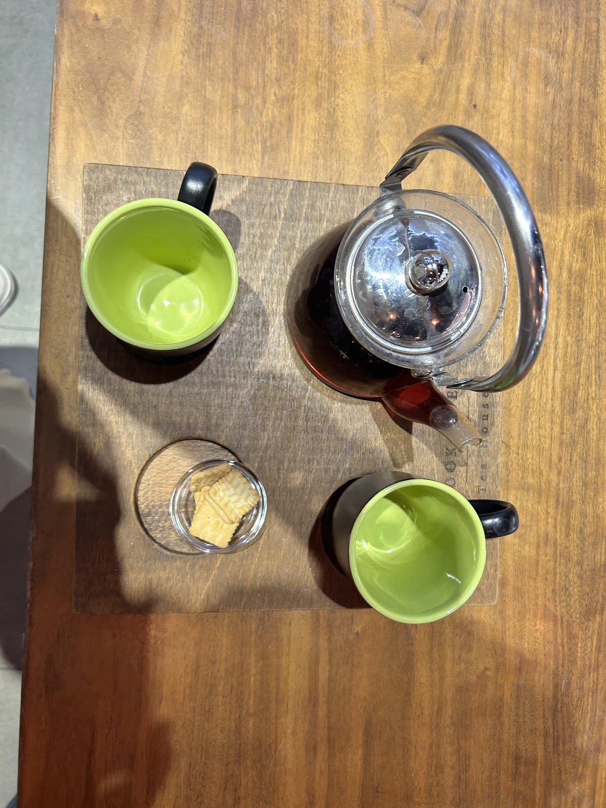
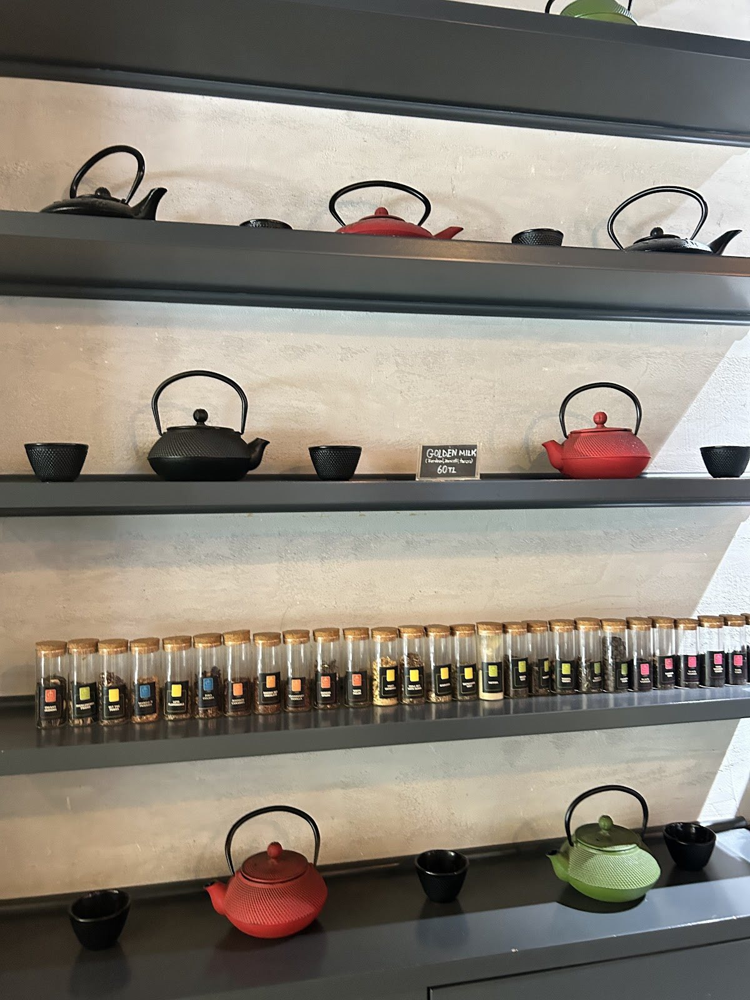
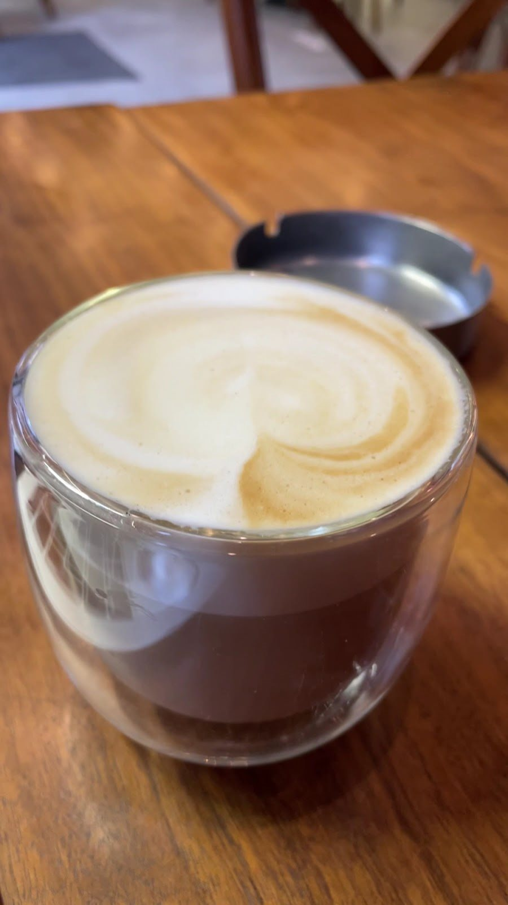

Google yorumu ★★★★★
“Çay çeşitleri bayağı var. Meyve çayları, beyaz çaylar, yeşil çaylar, siyah çaylar, bitki çayları, rooibos çayları gibi çaylar var.”Eda C.Yorumun tamamı
Barış Mahallesi, Beylikdüzü
Çay demlensin.
Sohbetin de vakti olsun.

Book And Tea House
Kahvenin de yeri var, çayın da. Bazen tek bir fincan, bazen paylaşılacak bir demlik. O gün canınız hangisini istiyorsa.

Raflardaki demlikler, masadaki fincanlar ve konuşacak onca şey. Kendinize küçük bir mola ayırın.
İlk yudumdan son sohbete. Çay yerine kahveyi seçtiğiniz günlerde de aynı masada buluşalım.
Instagram’da Book And Tea
Kitaplarla ve demliklerle çevrili bir iç mekân, dışarıda güne açılan masalar. Barış Mahallesi’nde bir araya gelelim.
Google yorumları
Google yorumu ★★★★★
“Çay çeşitleri bayağı var. Meyve çayları, beyaz çaylar, yeşil çaylar, siyah çaylar, bitki çayları, rooibos çayları gibi çaylar var.”Eda C.Yorumun tamamı
Google yorumu ★★★★★
“Havuçlu tarçınlı keki de çok lezzetli ve hafifti.”Nur Y.Yorumun tamamı
Google yorumu ★★★★★
“Menü olarak ne çok zengin ne çok düşük fakat bulunduğu lokasyona göre gayet güzel bir çeşitlilik var.”Özer Ö.Yorumun tamamı
Google yorumlarından kısa alıntılar. Puan ve yorum sayısı 2 Kasım 2026 tarihinde kontrol edilmiştir.
Güncel çalışma saatleri, menü ve ziyaretinizle ilgili sorularınız için telefonla bilgi alabilirsiniz.